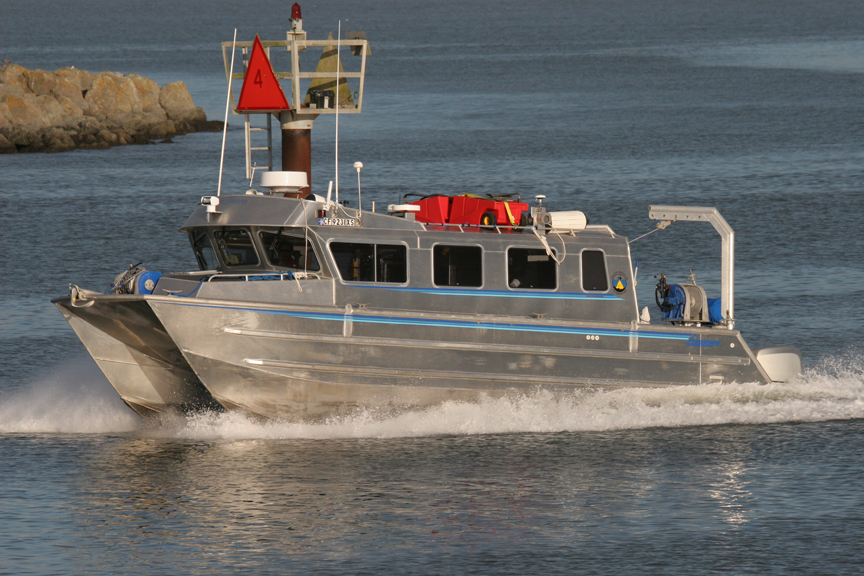
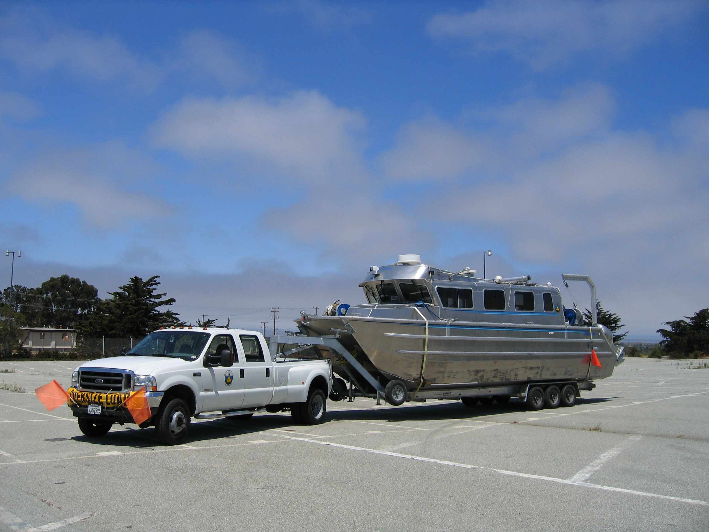
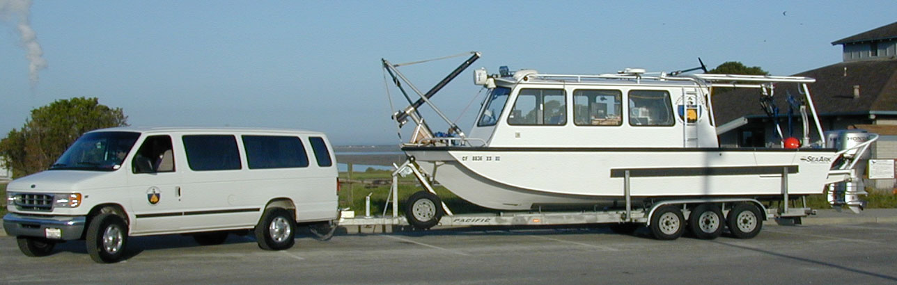
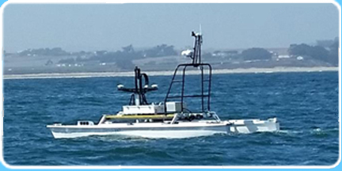
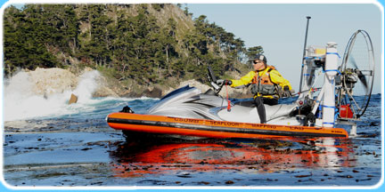
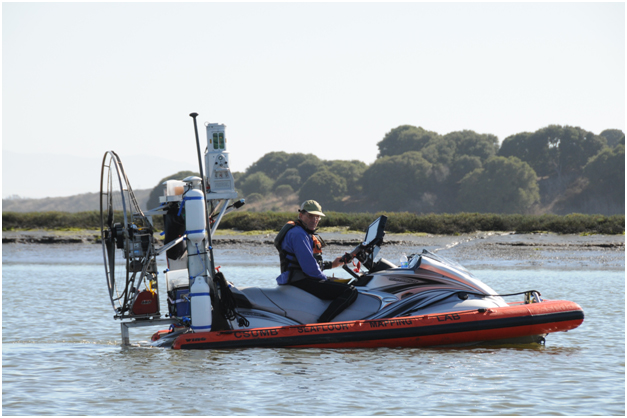

R/V VenTresca SOLD


The R/V VenTresca is a trailerable custom built, shallow draft, 35 ft. aluminum hydrographic survey catamaran.
Make & Model: Armstrong Marine custom manufactured
catamaran
Length: 35 ft
Draft: 2 ft
Beam: 10'6''
Engines: Twin Yamaha 350hp four-stroke outboards that meet EPA emission standards for 2006.
Electronics: PC-based Nobeltec/Sitex navigation includes
fully integrated GPS, digital charting, radar and autopilot.
Safety & radio equipment: EPIRB, life raft, flares, UHF
radio, submersible GPS and UHF radios.
Pilot House:
15' welded aluminum cabin with 6'2" headroom
Toilet compartment
30 gallon holding tank (w Y valve, fittings, and pump out)
Dinette seating/table, Galley package
7.5kw Genset with 6 dual 110VAC outlets
Hydraulics:
Honda 9 HP Hydraulic pump, 8 gpm w tank & filter
Kinematic 12x6 Anchor winch
Kinematic 12x14 SVP retrieval winch w high speed mounted motor
Galvanized hand winch and open snatch block for removable davits
SCUBA platform
Dive door center stern
Supported Mapping Instrumentation:
Applanix 320v4 POS MV position and motion sensor
Retractable pole mount for deployment of:
- SEA SWATHplus Splash 468 kHz interferometric bathymetric sidescan sonar
- RESON 7125 200/400 kHz multibeam bathymetry sonar
- RESON 7111 100 kHz multibeam bathymetry sonar
Roof mount for Riegl LMS-Z420i LiDAR for shoreline topographic mapping
ROV and video tow sled operations
Asking: $100,000 (vessel & trailer only) SOLD
R/V MacGinitie SOLD

Make
and Model: SeaArk, Little Giant
Length: 32ft overall, with a 27ft hull length.
Draft: 1.5 ft.
Beam: 8.5ft
Fuel: 100 gals regular gasoline
Gross weight: 10,000 fully equipped.
Engines: twin Honda 130 hp, counter rotating, 4 stroke outboards
that meet EPA emission standards for 2006. Top speed 34 knots. Survey
speed 8-12 knots. Cruising speed 18-28 knots depending on conditions.
Electrical power: 30 amps 110VAC, 12VDC
Electronics: PC-based Nobeltec/Sitex navigation includes
fully integrated GPS, digital charting, radar and autopilot.
Safety & radio equipment: EPIRB, life raft, flares, UHF
radio, submersible GPS and UHF radios
Scuba Platform: removable door
Supported Mapping Instrumentation:
Applanix 320v4 POS MV
Pole mounted sonar:
- SEA SWATHplus Splash 468 kHz interferometric bathymetric sidescan sonar
- RESON 7125 multibeam bathymetry system
Asking: $40,000 (vessel & trailer only) SOLD
|
R/V Albatross USV

SeaRobotics 5.7 m Unmanned Surface Vessel (USV) configured for interferometric mapping in ultra shallow waters.
Make
and Model: Sea Robotics catamaran USV
Length: 5.7 m (18.7 ft)
Draft: 0.5 m (1.6 ft)
Beam: 2.6 m (8.5 ft)
Power: Six 2685Whr Lithium-Ion Nickel Manganese Cobalt (Li (NiCoMn)O2) batteries
Engines: Twin Torqeedo 2KW @ 24V Thrusters
Speed Max: 9kts
Survey Speed: 1-7kts
Gross Weight: 624 kg (1373 lbs)
Power: 12VDC, 24VDC, 120VAC
Charging System: Six 300W smart chargers integrated into AC powered Pelican case
Electronics: Vessel control and data acquisition computers, compass, depth sounder, day/night PTZ camera, GPS
Safety & radio equipment: 5.8 GHz Ubiquiti Bullet radio system, day/night PTZ camera, running lights, radar reflector
Seafloor Mapping (configured for use with):
Bathyswath-1 H 468 kHz phase-differencing (interferometric) sonar on motorized retractable pole mount
Applanix POS/MV 320v4
AML MicroSV surface sound velocimeter
Hypack 2016 hydrographic survey software
Cost new: $250K
Asking: $100,000 (USV & trailer only, or $130,00 with Bathyswath-1H and MicroSV as described above) |
R/V Kelpfly SOLD

Barriers that preclude the use of conventional mapping platforms from filling in the nearshore "white zone" data gap include floating kelp, rocky shoals, foggy conditions and cloudy water. The CSUMB Seafloor Mapping Lab's R/V Kelpfly hybrid jet/airboat mapping platform was developed for mapping over and through kelp canopy and in the surf zone.

Modified JetSki/air boat system with sonar mount for mapping in ultra-shallow water and kelp forests, and LiDAR mount for topographic shoreline mapping.
Make & Model: Custom built by CSUMB SFML, completed in 2011
Engines: Yamaha 160 hp WaveRunner and Bailey Aviation 175 Paramotor
Length: 14 ft
Beam: 7ft
Draft: 12 inches
Fuel capacity: 18 gals gasoline
Speed Max: 25 kts
Survey Speed: 1-7 kts
Gross weight: 1700 lbs
Power: 12VDC, 24VDC
Supported Mapping Instrumentation:
Applanix WaveMaster POS MV, Bathyswath SWATHplus Splash 468 kHz interferometric bathymetric sidescan sonar, YSI Castaway CTD/Soundvelocity profiler, Riegl LMS-Z420i LiDAR
|
Seafloor Mapping lab Instrumentation
Position and motion sensors:
- Applanix WaveMaster POS MV Cost new: $70K, Asking: $30KSOLD
- Applanix 320v4 POS MV w/ 2 PCS, 1 IMU, many Z1 & Z2 antennae SOLD
Bathymetric Sonar Systems:
- (1) Bathyswath-1H (SEA SWATHplus) 468 kHz interferometric bathymetric sidescan sonar (Cost new: $110K, Asking: $50K)
- (2) Bathyswath-1H (SEA SWATHplus) 468 kHz interferometric bathymetric sidescan sonars (Cost new: $110K/ea, Asking: $50K/ea)SOLD
- RESON 7125 200/400 kHz multibeam bathymetry sonar SOLD
- RESON 7111 100 kHz multibeam bathymetry sonar (Cost new:$200K, Asking: $75K)
Topographic LiDAR System:
- Riegl LMS-Z420i LiDAR (Cost new:$275K, Asking: $100K)
Sub-bottom Profiler:
- EdgeTech SB-424 Full-Spectrum sub-bottom chirp profiler (4-24 kHz) topside bad, but with 75m & 250m tow cables included (Cost new:$62K, Asking: $20K)
Towed Sidescan Sonar System:
- Edgetech 260TH/272D (100/500 kHz) With 380 tape drive, lots of spare parts, and several cables of varying length, including armored. (Asking: $10K)
Sound Velocimeters:
- (2) YSI Castaway CTD SOLD
- AML MicroSV surface sound velocimeter (Cost new:$4.5K, Asking: $2K)
- AML Smart-X profiling sound velocimeter SOLD
- RESON SVP70 surface sound velocimeter SOLD
- (2) AML OCEANOGRAPHIC SVplus profiling sound velocimeter (Cost new: $8K & $11K, Asking: $4K & $5K) |
|